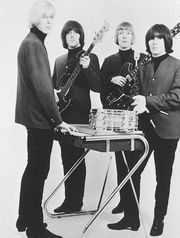
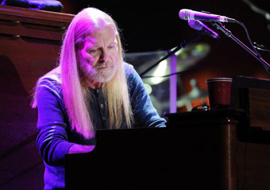
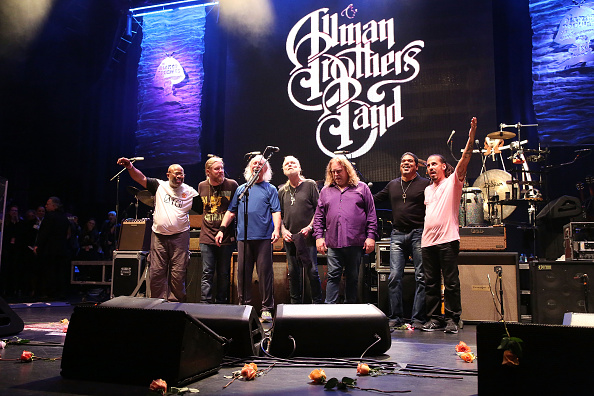

ГРЕГ ОЛЛМАНИнтервью в январе 2015 г. сайту http://www.tennessean.com/Вы репетируете, сочиняете новые песни. Как бы вы описали новый материал? Он похож на старый материал. Не знаю, как вы его обзовете. Похоже, всем хочется получить этикетку на свою музыку. У меня может быть смесь всего. Какие-то песни мои, какие-то народные. А некоторые из них - чистый блюз, другие — рок-н-ролл. Это просто добрая старая музыка. Некоторые из ваших детей пошли по вашим стопам, занялись музыкой. А вы и ваш брат? Среди ваших родственников кто-то играл музыку, или вы и ваш брат были пионерами в этом плане? Мы были пионерами. Никто из наших близких родственников не занимался музыкой. Кажется, среди наших родственников не было музыкантов. Известно, что отправной точкой к вашему с братом интересу к музыке был ваш сосед в Гэшвилле, который играл на гитаре. Был такой парень, который жил в доме напротив моей бабушки. Он был слегка слабоумным. Однажды во дворе он красил малярной кистью лимузин Паккард 1948 года. Его звали Джимми Бейнз. Я подошел и спросил: «Эх, Джимми, что это у тебя там, на крыльце?». Он ответил: «Это моя ги-и-итара». Она меня просто околдовала, я рядом никогда не видел гитару. Я спросил: «А ты умеешь на ней играть?». Он скуазал: «Не умел бы, она бы тут не лежала». Я сказал: «Ну, давай, подойди и сыграй мне что-нибудь». Он положил кисть, подошел и сыграл "She'll Be Coming 'Round the Mountain". Я подумал: «Чувак, если этот парень может так, то, богом-клянусь, и я смогу». Многие удивятся, узнав, что вы до этого случая не видели гитару близко — это живя-то в Нэшвилле, а не где-нибудь!  Ну, тогда наверное еще нет. То есть, кантри я конечно слышал, но музыка тогда не была частью жизни любого и каждого, как теперь. Конечно, теперь вы просто нажимаете на кнопки и можете слушать любую чертову песню, какую только захотите. В те времена было не так. Мы были не из тех, кто мог позволить себе проигрыватель и пластинки, нужно было ждать, когда запустят по радио. Надо было звонить и делать заявку на песню. Все было как-то не напрямую. Я приходил домой со своей новой гитарой, это была акустика Silvertone, купленная по почте. И у нас было двое соседей, которые каждый раз, когда я шел по улице, кричали: «Кем ты себя вообразил? Элвисом?». Ну, сейчас-то они уже не скажут ничего.Концерт в Municipal Auditorium, который вы с братом видели, сыграл большую роль в вашем музыкальном росте. Вы помните, кто выступал? Jackie Wilson, Otis Redding, B.B. King, Patti LaBelle and the Bluebells и кто-то из народной музыки. Это было большое ревю. У них был один аккомпанирующий состав на всех. Так были устроены все ревю: один хауз-бэнд, с которым выходили все солисты. Отис Реддинг просто меня сразил. А БиБи Кинг использовал какую-то мебель на сцене.Я спросил своего брата, что это за мебель? Мы же не могли видеть клавиатуру. Много позже я подсел на Джимми Смита и мне просто необходимы стали клавишные. Я начинал с того, что играл лидер-гитару, а мой брат играл на ритм-гитаре и пел. Мой брат не мог петь, я не мог играть соло, так что мы поменялись. Довольно скоро мой брат сказал: «Знаешь, тебе нужно или научится играть на клавишных, или начать петь. Или еще что-то придумать. Или тебя выгонят из твоей собственной группы.» Я сказал, «Черт меня побери, ты не выгонишь меня из моей же группы». Вот так я начал петь. Это было чудовищно. У меня до сих пор хранятся пленки тех времен.  Вы ведь до сих пор отдаете предпочтение этой «мебели» - органу Хэммонд Би-3 — а не более компактным электронным клавишным? С «Братьями...» я всегда имел их при себе две штуки, и теперь со своей группой тоже вожу два. Не знаю, заглядывали ли вы к ним в нутро. Их перестали выпускать в 1971 году. В тье времена электроплат не делали, так что все соединяется разноцветными проводками. Еще внутри есть генератор на случай, если мощности сети недостаточно. Этот Хэммонд Би-3 — он дает сочности больше, чем два гитариста. Так что, если сочности не хватает, когда вступает вся группа, высота звука у Хэммонда падает примерно на два тона. Потому что генератор не справляется. Однажды такое случилось, когда мы наелись грибов. Мы начали играть, и неожиданно я оказался не в той тональности. Мы остановились на середине песни, я его пнул, и он снова заиграл в тон! (смеется) Если бы вы с братом не уехали во Флориду, а остались в Нэшвилле, вас затянула бы кантри-музыка? Или вы считаете, что рок и ритм-энд-блюз были вашей судьбой? Меня и сейчас тянет к кантри. Мне бы очень хотелось записать альбом кантри. Меня просили об этом. И я сам обращался к разным композиторам. Только что я получил письмо от Люсинды Уилльмся (Lucinda Williams) по электронной почте, она говорит: «Если нужна будет помощь с записью кантри, я буду рада помочь». Мне это показалось очень мило.  Вы отыграли прощальные концерты the Allman Brothers Band. Было это похоже на прощальный поклон. Вы чувствуете, что оставляете группу в добрых воспоминаниях и можете двигаться к чему-то новому? О, да! Это были шесть волшебных вечеров, позвольте вам сказать. Это были одни из лучших концертов в нашей истории. Все вели себя как нельзя лучше (смех) Теперь, когда с этим покончено, что вы хотите делать в новом году? Ждать ли нам нового альбома? Да, в этом году можно рассчитывать на новый альбом от меня. У меня сейчас хватит на половину, но дела идут очень быстро!. |